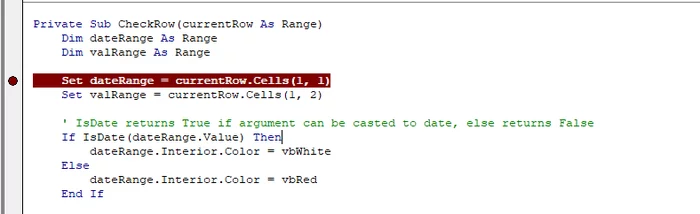
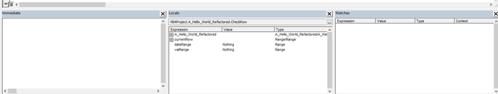
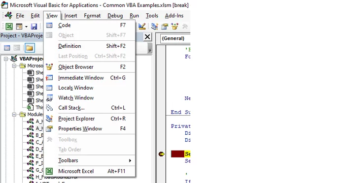
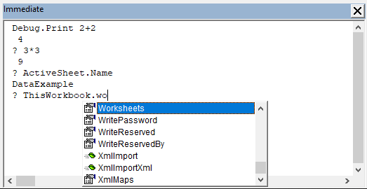
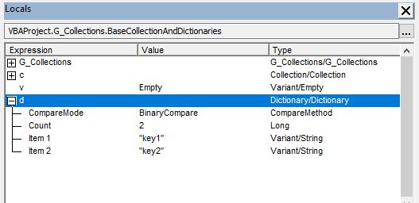
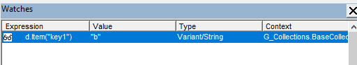
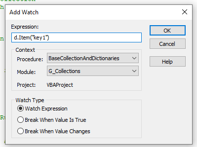
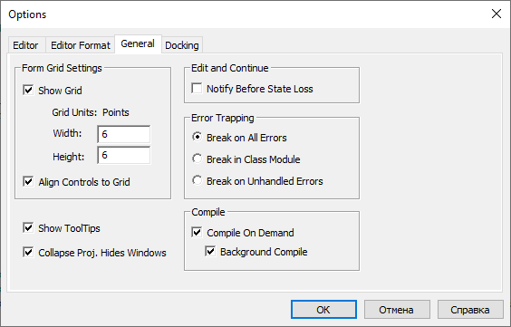

Debugging VBA code in Excel
Breakpoints, step-into and step-over, the Immediate, Locals and Watches windows, conditional breakpoints and error trapping settings in the VBA editor.
Many people who work with Excel a lot use workbooks or add-ins with VBA macros. Often an existing solution needs to be extended or a bug fixed. Finding the place where the bug hides, or where a particular calculation happens, can take a long time, especially when a project has tens of thousands of lines of code (such macros do exist). Text search helps in some cases, for example by searching for the text of a message embedded in the code, but sometimes it is easier to run the macro and step through it.
This article describes a few ways to debug VBA macros in MS Office applications, using Excel as the example:
- Regular breakpoints, step-into, step-over and step-out.
- The Immediate window (a “REPL terminal”), the Locals window and the Watches window.
- Conditional breakpoints based on watch expressions.
- Error handling settings.
1. Breakpoints and stepping
The most obvious way to debug is to put a breakpoint at the start of the macro and then run it line by line, watching variable values and the state of the cells in the workbook. To set a breakpoint, press F9 and a marker appears on the line with the cursor. You can also click in the margin to the left of the code (the red dot).

When execution reaches that line it pauses, and a yellow pointer shows the next statement to run:
Not everyone knows that this pointer can be moved to any statement within the same procedure by dragging the yellow arrow with the mouse.
While execution is paused you can continue step by step with step-into, step-over and step-out:
- step-into (F8) — one step forward. The line under the pointer is executed and the pointer moves to the next one. If the line calls another procedure, the pointer moves inside it.
- step-over (Shift+F8) — the same as step-into, except that it does not go into nested calls; the called procedure runs in one go.
- step-out (Ctrl+Shift+F8) — the current procedure runs to its end and execution pauses in the caller. Useful when you stepped into a long function by accident.
2. The Immediate, Locals and Watches windows
Now, how to find out the values of variables and other useful information. At the bottom of the Visual Basic Editor (VBE) there are three windows:
- Immediate — a terminal for running code and printing text;
- Locals — local variables;
- Watches — watch expressions.

If you do not see these windows, enable them in the View menu.

Let us look at what these tools offer.
The Immediate window is a REPL terminal: type an expression and press Enter to run it. To print the result in the same window, pass it to Debug.Print (you can also call that function from the macro code itself, and the output ends up in the Immediate window too). Inside the window you can use the short form, a question mark:

Note that Ctrl+Space and Ctrl+J bring up IntelliSense here too, just like in the main code editor.
The Locals window shows the values of the variables available in the current context:

For example, the current value of a loop counter or the contents of a collection. For Collection objects, expanding shows the values of the items, while for dictionaries (Dictionary) it shows their keys. So to see the value of a dictionary item you need to evaluate an expression such as:
dict.Item("key1")This can be done with a watch expression.

Select the expression and choose Add Watch... in the context menu (right mouse button), or type the expression by hand in the Add Watch dialog:

Be careful: evaluating d.Item("key1") adds an item to the dictionary if that key does not exist. Remember to delete the watch when you no longer need it, otherwise you may spend a long time later working out where the extra item in the dictionary came from.
3. Conditional breakpoints
Conditional breakpoints can be built from watches. Besides the standard Watch Expression option, the Add Watch dialog has two more: Break When Value Is True and Break When Value Changes. They pause the macro when the expression becomes true or when its value changes.
This is especially handy when debugging loops. If you know that a macro processing worksheet rows in a loop fails on, say, row 42, you can avoid stepping through the 41 previous iterations by hand. Add the expression i=42 with the Break When Value Is True option, where i is the loop counter variable.
4. Error handling
Finally, a few words about error handling in VBA. In the VBE settings (Tools → Options, General tab) you can choose one of three options:
- Break on All Errors
- Break in Class Module
- Break on Unhandled Errors

The last option is usually the default. It lets the program handle errors with On Error GoTo (show a message, clean up by closing a workbook or a connection) and On Error Resume Next (ignore the error and carry on). But when you run into a message like “Sorry, something went wrong” shown from an On Error GoTo handler, it is hard to tell where the error actually occurred. Break on All Errors helps here: it ignores the On Error directives and stops right on the line that raised the error. At that point the Locals window is useful too: the value of the loop counter, for example, tells you which worksheet row caused the error.
These settings are stored per user and are not saved in the VBA project.
I hope this is useful for people new to VBA as well as for experienced developers. If you work with Excel through an add-in and want to extend it, Navferty Excel Add-In is open source under the MIT license, and suggestions are welcome in the GitHub issues.
Originally published in Russian on Pikabu.
Приёмы отладки VBA-кода на примере MS Excel
Точки останова, пошаговое выполнение, окна Immediate, Locals и Watches, условные точки останова и настройки обработки ошибок в редакторе VBA.
Многие из тех, кто часто работает в MS Excel, используют книги или надстройки с VBA-макросами. Зачастую требуется доработать существующее решение: добавить новую функциональность или исправить найденный баг. В поисках места, где скрывается баг или производится нужное вычисление, можно провести немало времени, особенно если проект содержит десятки тысяч строк кода (увы, такие макросы иногда встречаются). Можно прибегнуть к текстовому поиску (например, по тексту сообщения, вшитому в код), но иногда удобнее запустить макрос и воспользоваться пошаговой отладкой.
Ниже описано несколько приёмов отладки макросов на VBA в приложениях MS Office, на примере Excel:
- Стандартные точки останова (breakpoint), step-into, step-over, step-out.
- Окна Immediate («REPL-терминал»), Locals (локальные переменные) и Watches (наблюдатели).
- Условные точки останова на базе watch expression.
- Обработка ошибок.
1. Точки останова и пошаговое выполнение
Самый очевидный способ отладки — поставить точку останова в начале макроса, а затем выполнять код строка за строкой, наблюдая за значениями переменных и состоянием ячеек в книге. Чтобы установить точку останова, нажмите F9: на строке, где находится курсор, появится отметка. Можно также кликнуть мышью по полю слева от кода (красный кружок).
Как только поток исполнения дойдёт до этой строки, он будет приостановлен, а жёлтый указатель покажет следующую инструкцию:
Многие не знают, что этот указатель можно переместить на любую инструкцию в пределах процедуры, просто перетащив жёлтую стрелку мышью.
Когда исполнение приостановлено, его можно продолжать пошагово командами step-into, step-over и step-out:
- step-into (F8) — шаг вперёд. Выполняется строка под указателем, указатель переходит на следующую. Если в строке есть вызов другой процедуры, указатель перейдёт внутрь неё.
- step-over (Shift+F8) — то же, что step-into, но без «проваливания» во вложенные вызовы: вызванная процедура выполняется целиком.
- step-out (Ctrl+Shift+F8) — текущая процедура выполняется до конца, а исполнение приостанавливается в вызывающей процедуре. Выручает, если вы случайно провалились в длинную функцию командой step-into.
2. Окна Immediate, Locals и Watches
Теперь о том, как узнать значения переменных и другую полезную информацию. В нижней части редактора VBA (VBE) находятся три окна:
- Immediate — терминал для выполнения кода и вывода текста;
- Locals — локальные переменные;
- Watches — наблюдатели.
Если этих окон не видно, включите их в меню View.
Рассмотрим подробнее, что дают эти инструменты.
Окно Immediate — это REPL-терминал: введите выражение и нажмите Enter, и оно будет выполнено. Чтобы вывести результат в это же окно, передайте его в Debug.Print (эту функцию можно вызывать и из основного кода макроса — вывод попадёт в то же окно Immediate). В самом окне можно использовать сокращение — знак вопроса:
Сочетания Ctrl+Space и Ctrl+J вызывают IntelliSense, как и в основном редакторе кода.
Окно Locals показывает значения переменных, доступных в текущем контексте:
Например, текущее значение счётчика цикла или состав коллекции. Для объектов Collection при раскрытии отображаются значения элементов, а для словарей (Dictionary) — их ключи. Поэтому, чтобы узнать значение элемента словаря, нужно вычислить выражение, например такое:
dict.Item("key1")Это можно сделать с помощью «наблюдателя» (watch expression).
Выделите выражение и выберите Add Watch... в контекстном меню (правая кнопка мыши) или введите нужное выражение вручную в окне добавления наблюдателя:
Осторожно: выражение d.Item("key1") при вычислении добавит элемент в словарь, если такого ключа в нём нет. Поэтому не забудьте удалить наблюдатель, когда он станет не нужен, иначе потом можно долго выяснять, откуда в словаре взялся лишний элемент.
3. Условные точки останова
Условные точки останова можно сделать с помощью наблюдателей. В окне добавления наблюдателя, помимо стандартной опции Watch Expression, есть ещё две: Break When Value Is True и Break When Value Changes. Они приостанавливают выполнение макроса, когда выражение становится истинным или когда его значение меняется.
Это особенно полезно при отладке циклов. Если известно, что макрос, обрабатывающий в цикле строки листа, падает, скажем, на строке 42, то можно не «пролистывать» вручную 41 предыдущую итерацию, а добавить выражение i=42 с опцией Break When Value Is True, где i — переменная-счётчик цикла.
4. Обработка ошибок
Напоследок об обработке ошибок в VBA. В настройках VBE (меню Tools → Options, вкладка General) есть выбор из трёх вариантов:
- Break on All Errors
- Break in Class Module
- Break on Unhandled Errors
Обычно по умолчанию выбран последний вариант, который позволяет обрабатывать ошибки директивами On Error GoTo (показать сообщение, «прибраться за собой» — закрыть книгу или соединение) и On Error Resume Next (игнорировать ошибку и продолжить). Но когда вы видите сообщение вроде «Извините, что-то пошло не так», выведенное из обработчика On Error GoTo, найти место, где произошла ошибка, трудно. Здесь пригодится Break on All Errors: он игнорирует директивы On Error и останавливает выполнение прямо на строке с ошибкой. В этот момент полезно заглянуть в окно Locals: например, значение счётчика цикла покажет, на какой строке листа Excel возникла ошибка.
Эти настройки хранятся на уровне пользователя и не сохраняются в VBA-проекте.
Надеюсь, статья будет полезна и начинающим пользователям VBA, и опытным разработчикам. Если вы работаете с Excel через надстройку и хотите расширить её возможности, проект Navferty Excel Add-In открыт под лицензией MIT, а предложения и замечания можно оставлять в issues на GitHub.
Статья впервые опубликована на Пикабу.